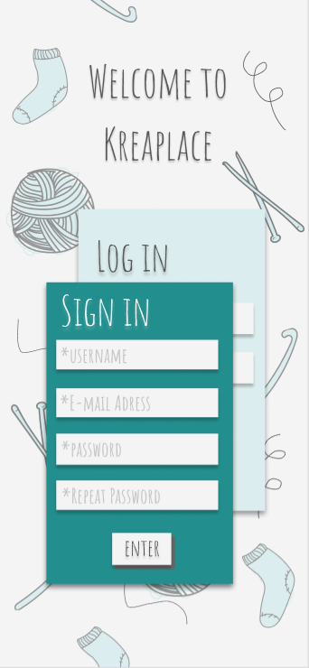

Kreaplace
UI, UX, HTML, CSS, Javascript
This project was created for a startup company called Kreaplace. Their goal was to
create a platform where all knitting and crocheting enthusiasts would find inspiration and help when
needed.
See the page
here

Prototype
After opening the page users are welcomed in sign in/ log in page filled
with cute knitting and crocheting doodles moving in a parallax effect.
Home page offers inspirations for all enthusiasts which can be saved for later by clicking on a
bookmark in the corner of the image. When searching for something specific, users might write their
idea in a search bar to display related content or simply click on one of the categories.
In section Marketplace users can buy or sell their creations as well as search for a desired product
or filter from categories.
Forum offers users place to ask questions and seek for an advice. They can comment and talk to other
enthusiasts.
Users are able to create a new post after clicking on a new post icon and find everything they
shared and saved on their profile.
Large screen version
As we found out during our research, many respondents prefered idea of large screen
varsion
as it is much easier navigable when doing activites such as knitting or crocheting. For many
enthusiasts it was
easier to imagine following tutorial on a computer screen. Thus, in the development process, we
decided to prioritize preference of our target audience
and coded a solution for large screens only. To finish prototype we created mockups for mobile
version as well to make the product responsive.

← Previous project
Next project →